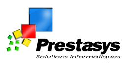
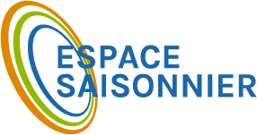

Prestasys , BEZIERS 2014-2015
fonction :
Technicien Réseau
Description du poste :
Mise en place de differents serveur pour des entreprises et poste client. Management et update de c'est dernier avec controle a distance.
Installation de routeurs, switch et vpn entre different site pour les entreprises.
rencontre avec les clients pour études de solution.
ITK media, CERS 2014 (6 mois)
fonction :
Technicien Son et lumière
Description du poste :
Second de l'ingénieur en Son et lumère. Mise en place du matériel necesssaire lors des manifestation et enregistrment de production pour un groupe.
Gestion écran géant sur camion avec caméraman pour retransmition de manifestion en extérieur
Jobs saisonié :
septembre 2016 Hotel le modern valras-plage
mai - aout 2016 Camping La dragonière Vias
octobre - decembre 2016 Relai coli
été 2013 - 2012 Rouge Gorge
